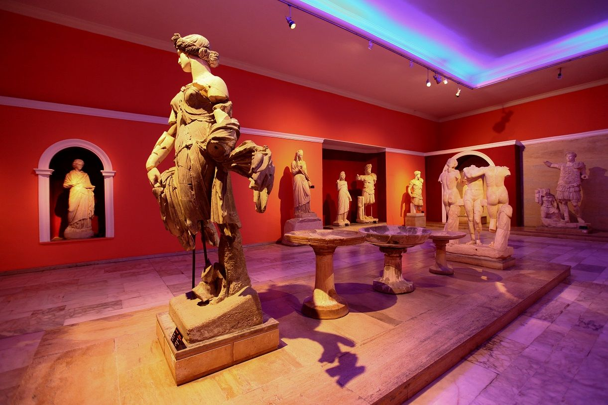
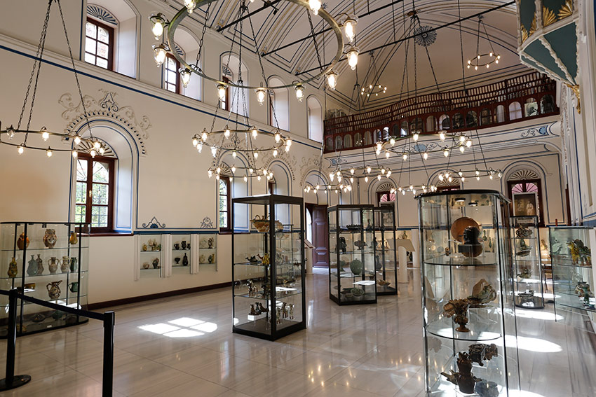
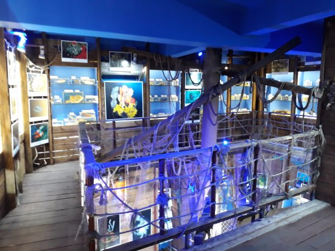
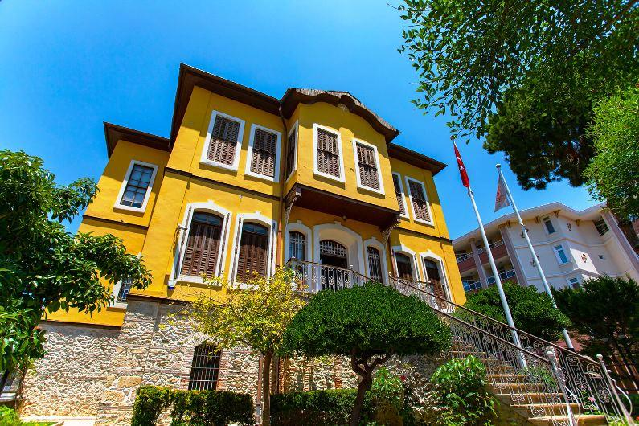

Antalya’daki Müzeler

Antalya Müzesi
Antik Likya, Pamfilya ve Pisidya bölgelerinden gelen arkeolojik eserlerin sergilendiği Türkiye’nin en büyük müzelerinden biridir.
Adres: Bahçelievler Mah., Konyaaltı/Antalya
Ziyaret Saatleri: Her gün 08:30 – 20:00
Giriş: Tam: 150 TL
Müze Kart: Geçerli

Oyuncak Müzesi
Antalya Kaleiçi’nde yer alan müze, geçmişten günümüze binlerce oyuncağın sergilendiği renkli ve nostaljik bir dünyadır.
Adres: Kaleiçi, Selçuk Mah., Antalya
Ziyaret Saatleri: Pazartesi hariç her gün 09:00 – 18:00
Giriş: Tam: 30 TL
Müze Kart: Geçerli değil

Suna & İnan Kıraç Kaleiçi Müzesi
Antalya’nın geleneksel yaşamını yansıtan etnografik koleksiyonları ve restore edilmiş eski Antalya eviyle dikkat çeker.
Adres: Barbaros Mah., Hıdırlık Sokak, Kaleiçi/Antalya
Ziyaret Saatleri: Salı – Pazar 09:00 – 17:00
Giriş: Ücretli (Tam: 40 TL)
Müze Kart: Geçerli değil

Deniz Biyolojisi Müzesi
Antalya Marina’da yer alan müze, Akdeniz’in su altı canlılarına dair çeşitli türleri keşfetme fırsatı sunar.
Adres: Antalya Yat Limanı, Kaleiçi
Ziyaret Saatleri: Her gün 10:00 – 18:00
Giriş: Ücretli (Tam: 20 TL)
Müze Kart: Geçerli değil

Atatürk Evi ve Müzesi
Mustafa Kemal Atatürk'ün Antalya ziyareti sırasında kaldığı evdir. İçinde Atatürk’e ait fotoğraflar, eşyalar ve belgeler sergilenir.
Adres: Şirinyalı Mah., Muratpaşa/Antalya
Ziyaret Saatleri: Her gün 08:30 – 17:30
Giriş: Ücretsiz
Müze Kart: Gerekli değil